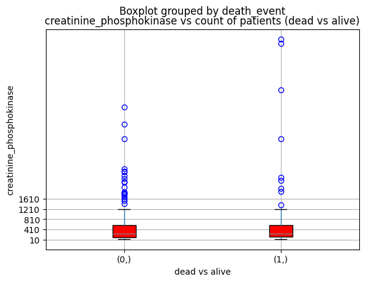

Code
import pandas as pd
import numpy as np
import matplotlib.pyplot as plt
import seaborn as snsCardiovascular diseases (CVDs) are the number 1 cause of death globally, taking an estimated 17.9 million lives each year, which accounts for 31% of all deaths worlwide. Heart failure is a common event caused by CVDs and this dataset contains 12 features that can be used to predict mortality by heart failure.
Most cardiovascular diseases can be prevented by addressing behavioural risk factors such as tobacco use, unhealthy diet and obesity, physical inactivity and harmful use of alcohol using population-wide strategies.
People with cardiovascular disease or who are at high cardiovascular risk (due to the presence of one or more risk factors such as hypertension, diabetes, hyperlipidaemia or already established disease) need early detection and management wherein a machine learning model can be of great help.
https://www.kaggle.com/datasets/andrewmvd/heart-failure-clinical-data
| Column | Description |
|---|---|
| Anaemia | Indicates decrease of red blood cells or hemoglobin. |
| Creatinine Phosphokinase | It is an enzyme present in the heart, whose elevated levels in the bloodstream indicate muscle or cardiac damage. |
| Diabetes | It is a chronic medical condition characterized by elevated blood sugar levels resulting from insufficient insulin production or the body’s inability to effectively use insulin. |
| Ejection Fraction | It is a measure of the percentage of blood that the heart’s left ventricle pumps out with each contraction, providing an assessment of the heart’s pumping efficiency; a lower EF may indicate heart dysfunction or failure. |
| Blood Pressure | Blood pressure is the force exerted by circulating blood against the walls of arteries. |
| Platelets | platelets help prevent excessive bleeding by forming blood clots at the site of vascular injury. |
| Serum Creatinine | Serum creatinine is a waste product generated by muscle metabolism that is filtered out of the blood by the kidneys. |
| Serum Sodium | Serum sodium refers to the concentration of sodium ions in the liquid component of blood. |
| sex | The sex of the patient. |
| Smoking | If the patient smokes actively or ever did in past. |
| Time | It is the time of the patient’s follow-up visit for the disease in months. |
import pandas as pd
import numpy as np
import matplotlib.pyplot as plt
import seaborn as snspink = "#EB84AC"df = pd.read_csv("Data/heart_failure_clinical_records_dataset.csv")df.head()| age | anaemia | creatinine_phosphokinase | diabetes | ejection_fraction | high_blood_pressure | platelets | serum_creatinine | serum_sodium | sex | smoking | time | DEATH_EVENT | |
|---|---|---|---|---|---|---|---|---|---|---|---|---|---|
| 0 | 75.0 | 0 | 582 | 0 | 20 | 1 | 265000.00 | 1.9 | 130 | 1 | 0 | 4 | 1 |
| 1 | 55.0 | 0 | 7861 | 0 | 38 | 0 | 263358.03 | 1.1 | 136 | 1 | 0 | 6 | 1 |
| 2 | 65.0 | 0 | 146 | 0 | 20 | 0 | 162000.00 | 1.3 | 129 | 1 | 1 | 7 | 1 |
| 3 | 50.0 | 1 | 111 | 0 | 20 | 0 | 210000.00 | 1.9 | 137 | 1 | 0 | 7 | 1 |
| 4 | 65.0 | 1 | 160 | 1 | 20 | 0 | 327000.00 | 2.7 | 116 | 0 | 0 | 8 | 1 |
df.info()<class 'pandas.core.frame.DataFrame'>
RangeIndex: 299 entries, 0 to 298
Data columns (total 13 columns):
# Column Non-Null Count Dtype
--- ------ -------------- -----
0 age 299 non-null float64
1 anaemia 299 non-null int64
2 creatinine_phosphokinase 299 non-null int64
3 diabetes 299 non-null int64
4 ejection_fraction 299 non-null int64
5 high_blood_pressure 299 non-null int64
6 platelets 299 non-null float64
7 serum_creatinine 299 non-null float64
8 serum_sodium 299 non-null int64
9 sex 299 non-null int64
10 smoking 299 non-null int64
11 time 299 non-null int64
12 DEATH_EVENT 299 non-null int64
dtypes: float64(3), int64(10)
memory usage: 30.5 KB# Cleaning the data: removing blank lines and null values
# Checking for null values in the dataset
null_values = df.isnull().sum()null_valuesage 0
anaemia 0
creatinine_phosphokinase 0
diabetes 0
ejection_fraction 0
high_blood_pressure 0
platelets 0
serum_creatinine 0
serum_sodium 0
sex 0
smoking 0
time 0
DEATH_EVENT 0
dtype: int64# Checking if there are any blank lines (all values are NaN)
blank_lines = df.isna().all(axis=1).sum()blank_lines0# Removing any rows with null values
df_cleaned = df.dropna()# Displaying the null value count and blank line count, and the first few rows of the cleaned dataframe
null_values, blank_lines, df_cleaned.head()(age 0
anaemia 0
creatinine_phosphokinase 0
diabetes 0
ejection_fraction 0
high_blood_pressure 0
platelets 0
serum_creatinine 0
serum_sodium 0
sex 0
smoking 0
time 0
DEATH_EVENT 0
dtype: int64,
0,
age anaemia creatinine_phosphokinase diabetes ejection_fraction \
0 75.0 0 582 0 20
1 55.0 0 7861 0 38
2 65.0 0 146 0 20
3 50.0 1 111 0 20
4 65.0 1 160 1 20
high_blood_pressure platelets serum_creatinine serum_sodium sex \
0 1 265000.00 1.9 130 1
1 0 263358.03 1.1 136 1
2 0 162000.00 1.3 129 1
3 0 210000.00 1.9 137 1
4 0 327000.00 2.7 116 0
smoking time DEATH_EVENT
0 0 4 1
1 0 6 1
2 1 7 1
3 0 7 1
4 0 8 1 )df_cleaned = df_cleaned.rename(columns={'DEATH_EVENT': 'death_event'})df_cleaned.head()| age | anaemia | creatinine_phosphokinase | diabetes | ejection_fraction | high_blood_pressure | platelets | serum_creatinine | serum_sodium | sex | smoking | time | death_event | |
|---|---|---|---|---|---|---|---|---|---|---|---|---|---|
| 0 | 75.0 | 0 | 582 | 0 | 20 | 1 | 265000.00 | 1.9 | 130 | 1 | 0 | 4 | 1 |
| 1 | 55.0 | 0 | 7861 | 0 | 38 | 0 | 263358.03 | 1.1 | 136 | 1 | 0 | 6 | 1 |
| 2 | 65.0 | 0 | 146 | 0 | 20 | 0 | 162000.00 | 1.3 | 129 | 1 | 1 | 7 | 1 |
| 3 | 50.0 | 1 | 111 | 0 | 20 | 0 | 210000.00 | 1.9 | 137 | 1 | 0 | 7 | 1 |
| 4 | 65.0 | 1 | 160 | 1 | 20 | 0 | 327000.00 | 2.7 | 116 | 0 | 0 | 8 | 1 |
max(df_cleaned["age"])95.0min(df_cleaned["age"])40.0Figure1, Axes1 = plt.subplots()
Axes1.hist(df["age"],
bins = [40, 50, 60, 70, 80, 90, 100],
edgecolor = "black",
color = pink)
Axes1.spines["top"].set_visible(False)
Axes1.spines["right"].set_visible(False)
Axes1.yaxis.set_tick_params(labelsize = 12)
Axes1.xaxis.set_tick_params(labelsize = 12)
plt.title(label = "Histogram",
loc = "left",
fontsize = 24)
plt.ylabel(ylabel = "Count",
fontsize = 16)
plt.xlabel(xlabel = "Age Range",
fontsize = 16)
plt.savefig(fname = "./Images/Figure1",
dpi = 400)
plt.show()
plt.hist(df_cleaned["age"],
edgecolor = "black",
bins = [40,50,60,70,80,90,100])(array([47., 82., 93., 52., 19., 6.]),
array([ 40., 50., 60., 70., 80., 90., 100.]),
<BarContainer object of 6 artists>)
df_cleaned[df_cleaned["age"] > 85]| age | anaemia | creatinine_phosphokinase | diabetes | ejection_fraction | high_blood_pressure | platelets | serum_creatinine | serum_sodium | sex | smoking | time | death_event | |
|---|---|---|---|---|---|---|---|---|---|---|---|---|---|
| 5 | 90.0 | 1 | 47 | 0 | 40 | 1 | 204000.00 | 2.10 | 132 | 1 | 1 | 8 | 1 |
| 16 | 87.0 | 1 | 149 | 0 | 38 | 0 | 262000.00 | 0.90 | 140 | 1 | 0 | 14 | 1 |
| 26 | 95.0 | 1 | 112 | 0 | 40 | 1 | 196000.00 | 1.00 | 138 | 0 | 0 | 24 | 1 |
| 30 | 94.0 | 0 | 582 | 1 | 38 | 1 | 263358.03 | 1.83 | 134 | 1 | 0 | 27 | 1 |
| 36 | 90.0 | 1 | 60 | 1 | 50 | 0 | 226000.00 | 1.00 | 134 | 1 | 0 | 30 | 1 |
| 55 | 95.0 | 1 | 371 | 0 | 30 | 0 | 461000.00 | 2.00 | 132 | 1 | 0 | 50 | 1 |
| 119 | 86.0 | 0 | 582 | 0 | 38 | 0 | 263358.03 | 1.83 | 134 | 0 | 0 | 95 | 1 |
| 289 | 90.0 | 1 | 337 | 0 | 38 | 0 | 390000.00 | 0.90 | 144 | 0 | 0 | 256 | 0 |
Citation
Davide Chicco, Giuseppe Jurman: Machine learning can predict survival of patients with heart failure from serum creatinine and ejection fraction alone. BMC Medical Informatics and Decision Making 20, 16 (2020). (link)
License
CC BY 4.0
Splash icon
Icon by Freepik, available on Flaticon.
Splash banner
Wallpaper by jcomp, available on Freepik.